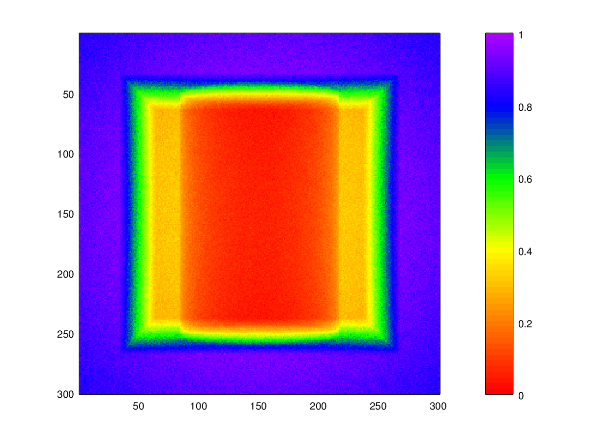
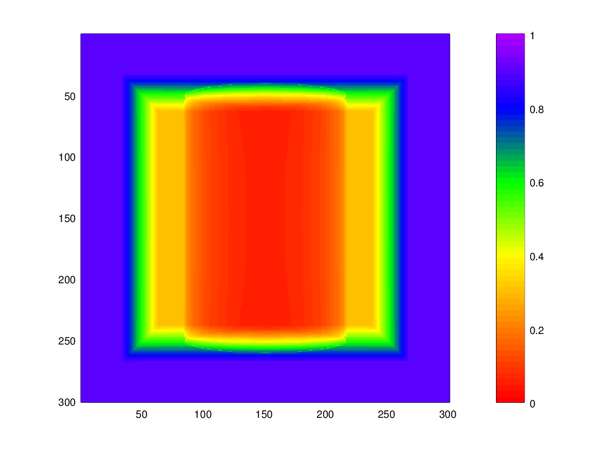

Using a Monte Carlo method for particle physics implemented in GATE
Using our GPU implementation
GATE is an opensource software developed by the international collaboration.
Its focus is on Monte Carlo simulation in medical imaging and radiotherapy.
To achieve this GATE makes use of the Geant4 libraries.
Geant 4 is CERN's Monte Carlo simulation platform dedicated to particle physics in nuclear research (CERN is the European Organization for Nuclear Research).
The results presented here have been generated using validation_06.cxx.
GATE scripts are available here;
raw results here;
and GNU Octave scripts here.
A cube, which has edge length of 3 cm, is made of soft tissue (HU ≈ 52). Its density is 1.062619 g/cm3
Inside, a cylinder is inserted. It is made of bone (HU ≈ 1330), its height is 3 cm and its diameter is 2 cm. Its density is 1.803768 g/cm3
Tab. 1. shows the composition of the materials. Fig. 2. is an illustration of the geometrical setup of the simulation.
The incident energy, Ii, is 80 keV (i.e. 0.08 MeV).
Fig 1. Sample used in the simulation.
Material
Element
Element weight
Bone
Hydrogen
0.039
Carbon
0.179
Nitrogen
0.041
Oxygen
0.429
Sodium
0.001
Magnesium
0.002
Phosphor
0.096
Sulfur
0.003
Calcium
0.21
Soft tissue
Hydrogen
0.103
Carbon
0.134
Nitrogen
0.03
Oxygen
0.723
Sodium
0.002
Phosphor
0.002
Sulfur
0.002
Chlorine
0.002
Potassium
0.002
Fig 2. 3D scene used in the simulation.
Fig. 3. shows the images simulated using GATE and using gVirtualXRay.
GATE takes into account photon scattering; gVirtualXRay does not.
The normalised cross-correlation between the two images is 0.99744.
However, the two images are very close.
Fig. 4. shows horizontal profiles. As Monte Carlo methods produces noisy results, average profiles along the 7th central lines are considered.
Again, the two profiles are very close to each others.


Fig 3. Simulated images. (left) using GATE; (right) using gVirtualXRay.
Fig 4. Average profile along the 7th central lines.